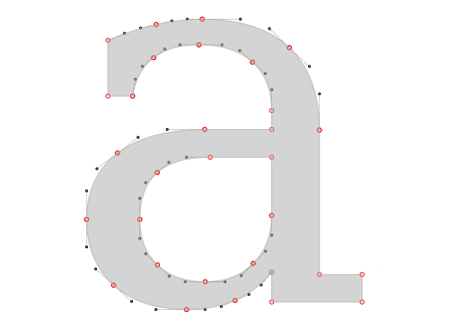
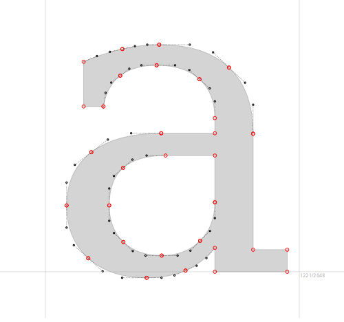
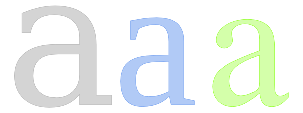
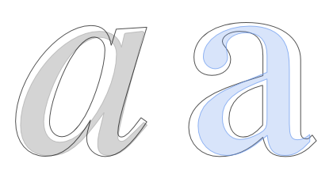
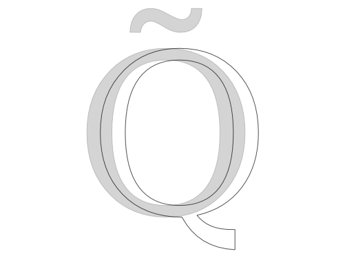

La comparaison du même glyphe dans différentes polices peut être utile aussi bien pour le travail que pour l'étude.
Pour ajouter une police à la liste de comparaison dans la barre latérale Parcourir les polices, cliquez sur le visage de la police, puis allez dans l'onglet Comparer et cliquez sur le bouton Ajouter.
Voici une vue typique de Fontmatrix en mode de comparaison de glyphes :
Examinons maintenant de plus près les options qui s'offrent à vous.
La case à cocher Afficher bascule la visibilité d'un rendu de glyphe avec une police qui est actuellement sélectionnée dans la liste ci-dessus.
Remplir permet de choisir l'un des remplissages prédéfinis pour un glyphe ou de désactiver le remplissage coloré en sélectionnant "Aucun".
Points rendra les points à partir desquels la forme d'un glyphe est construite, et Contrôles rendra les points de contrôle pour ces points :

"Métriques" affichera la ligne de base et la taille em :

"Décalage" déplace un glyphe horizontalement vers la droite afin que vous puissiez aligner plusieurs glyphes sans les superposer :

Mais parfois, la superposition est exactement ce que vous voulez, surtout lorsque vous étudiez les différences de graisses au sein d'une même famille de polices. Dans ce cas, vous pouvez utiliser le décalage pour regrouper les graisses des faces romaines et italiques :

Bien qu'utilisant la même zone énorme que dans l'aire de jeu, la quantité de décalage est limitée, de sorte que cinq glyphes sont généralement une limite pour les lettres.
Enfin, la case à cocher Synchroniser garantit que vous utilisez le même caractère pour la comparaison entre les polices, et le curseur et la case à cocher sont un moyen de choisir un caractère pour le rendu. Si vous souhaitez comparer deux glyphes similaires de la même police, ajoutez cette police deux fois et décochez Synchroniser pour sélectionner le deuxième glyphe similaire :

{kind=link}